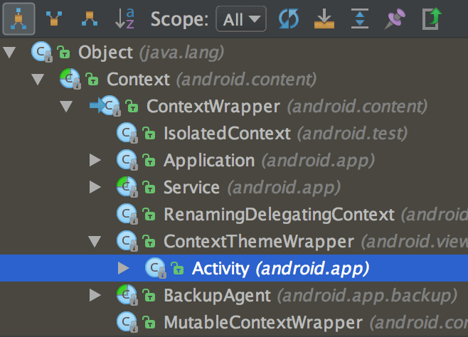

Android 插件化原理解析——Hook机制之AMS&PMS
在前面的文章中我们介绍了DroidPlugin的Hook机制，也就是代理方式和Binder Hook；插件框架通过AOP实现了插件使用和开发的透明性。在讲述DroidPlugin如何实现四大组件的插件化之前，有必要说明一下它对ActivityManagerServiche以及PackageManagerService的Hook方式（以下简称AMS，PMS）。
ActivityManagerService对于FrameWork层的重要性不言而喻，Android的四大组件无一不与它打交道：
startActivity最终调用了AMS的startActivity系列方法，实现了Activity的启动；Activity的生命周期回调，也在AMS中完成；startService,bindService最终调用到AMS的startService和bindService方法；- 动态广播的注册和接收在AMS中完成（静态广播在PMS中完成）
getContentResolver最终从AMS的getContentProvider获取到ContentProvider
而PMS则完成了诸如权限校捡(checkPermission,checkUidPermission)，Apk meta信息获取(getApplicationInfo等)，四大组件信息获取(query系列方法)等重要功能。
在上文Android插件化原理解析——Hook机制之Binder Hook中讲述了DroidPlugin的Binder Hook机制；我们知道AMS和PMS就是以Binder方式提供给应用程序使用的系统服务，理论上我们也可以采用这种方式Hook掉它们。但是由于这两者使用得如此频繁，Framework给他们了一些“特别优待”，这也给了我们相对于Binder Hook更加稳定可靠的hook方式。
阅读本文之前，可以先clone一份 understand-plugin-framework，参考此项目的ams-pms-hook模块。另外，插件框架原理解析系列文章见索引。
AMS获取过程
前文提到Android的四大组件无一不与AMS相关，也许读者还有些许疑惑；这里我就挑一个例子，依据Android源码来说明，一个简单的startActivity是如何调用AMS最终通过IPC到system_server的。
不论读者是否知道，我们使用startActivity有两种形式：
- 直接调用Context类的startActivity方法；这种方式启动的Activity没有Activity栈，因此不能以standard方式启动，必须加上FLAG_ACTIVITY_NEW_TASK这个Flag。
- 调用被Activity类重载过的startActivity方法，通常在我们的Activity中直接调用这个方法就是这种形式；
Context.startActivity
我们查看Context类的startActivity方法，发现这竟然是一个抽象类；查看Context的类继承关系图如下：

我们看到诸如Activity，Service等并没有直接继承Context，而是继承了ContextWrapper；继续查看ContextWrapper的实现：
@Override
public void startActivity(Intent intent) {
mBase.startActivity(intent);
}
WTF!! 果然人如其名，只是一个wrapper而已；这个mBase是什么呢？这里我先直接告诉你，它的真正实现是ContextImpl类；至于为什么，有一条思路：mBase是在ContextWrapper构造的时候传递进来的，那么在ContextWrapper构造的时候可以找到答案
什么时候会构造ContextWrapper呢？它的子类Application，Service等被创建的时候。
可以在App的主线程AcitivityThread的performLaunchActivity方法里面找到答案；更详细的解析可以参考老罗的 Android应用程序启动过程源代码分析
好了，我们姑且当作已经知道Context.startActivity最终使用了ContextImpl里面的方法，代码如下：
public void startActivity(Intent intent, Bundle options) {
warnIfCallingFromSystemProcess();
if ((intent.getFlags()&Intent.FLAG_ACTIVITY_NEW_TASK) == 0) {
throw new AndroidRuntimeException(
"Calling startActivity() from outside of an Activity "
+ " context requires the FLAG_ACTIVITY_NEW_TASK flag."
+ " Is this really what you want?");
}
mMainThread.getInstrumentation().execStartActivity(
getOuterContext(), mMainThread.getApplicationThread(), null,
(Activity)null, intent, -1, options);
}
代码相当简单；我们知道了两件事：
- 其一，我们知道了在Service等非Activity的Context里面启动Activity为什么需要添加
FLAG_ACTIVITY_NEW_TASK； - 其二，真正的
startActivity使用了Instrumentation类的execStartActivity方法；继续跟踪：
public ActivityResult execStartActivity(
Context who, IBinder contextThread, IBinder token, Activity target,
Intent intent, int requestCode, Bundle options) {
// ... 省略无关代码
try {
intent.migrateExtraStreamToClipData();
intent.prepareToLeaveProcess();
// ----------------look here!!!!!!!!!!!!!!!!!!!
int result = ActivityManagerNative.getDefault()
.startActivity(whoThread, who.getBasePackageName(), intent,
intent.resolveTypeIfNeeded(who.getContentResolver()),
token, target != null ? target.mEmbeddedID : null,
requestCode, 0, null, null, options);
checkStartActivityResult(result, intent);
} catch (RemoteException e) {
}
return null;
}
到这里我们发现真正调用的是ActivityManagerNative的startActivity方法；如果你不清楚ActivityManager，ActivityManagerService以及ActivityManagerNative之间的关系；建议先仔细阅读我之前关于Binder的文章 Binder学习指南。
Activity.startActivity
Activity类的startActivity方法相比Context而言直观了很多；这个startActivity通过若干次调用辗转到达startActivityForResult这个方法，在这个方法内部有如下代码：
nstrumentation.ActivityResult ar =
mInstrumentation.execStartActivity(
this, mMainThread.getApplicationThread(), mToken, this,
intent, requestCode, options);
可以看到，其实通过Activity和ContextImpl类启动Activity并无本质不同，他们都通过Instrumentation这个辅助类调用到了ActivityManagerNative的方法。
Hook AMS
OK，我们到现在知道；其实startActivity最终通过ActivityManagerNative这个方法远程调用了AMS的startActivity方法。那么这个ActivityManagerNative是什么呢？
ActivityManagerNative实际上就是ActivityManagerService这个远程对象的Binder代理对象；每次需要与AMS打交道的时候，需要借助这个代理对象通过驱动进而完成IPC调用。
我们继续看ActivityManagerNative的getDefault()方法做了什么：
static public IActivityManager getDefault() {
return gDefault.get();
}
gDefault这个静态变量的定义如下：
private static final Singleton<IActivityManager> gDefault = new
Singleton<IActivityManager>() {
protected IActivityManager create() {
IBinder b = ServiceManager.getService("activity
IActivityManager am = asInterface(
return am;
}
};
由于整个Framework与AMS打交道是如此频繁，framework使用了一个单例把这个AMS的代理对象保存了起来；这样只要需要与AMS进行IPC调用，获取这个单例即可。这是AMS这个系统服务与其他普通服务的不同之处，也是我们不通过Binder Hook的原因——我们只需要简单地Hook掉这个单例即可。
这里还有一点小麻烦：Android不同版本之间对于如何保存这个单例的代理对象是不同的；Android 2.x系统直接使用了一个简单的静态变量存储，Android 4.x以上抽象出了一个Singleton类；具体的差异可以使用grepcode进行比较：差异
我们以4.x以上的代码为例说明如何Hook掉AMS；方法使用的动态代理，如果有不理解的，可以参考之前的系列文章Android插件化原理解析——Hook机制之动态代理
Class<?> activityManagerNativeClass = Class.forName("android.app.ActivityManagerNative");
// 获取 gDefault 这个字段, 想办法替换它
Field gDefaultField = activityManagerNativeClass.getDeclaredField("gDefault");
gDefaultField.setAccessible(true);
Object gDefault = gDefaultField.get(null);
// 4.x以上的gDefault是一个 android.util.Singleton对象; 我们取出这个单例里面的字段
Class<?> singleton = Class.forName("android.util.Singleton");
Field mInstanceField = singleton.getDeclaredField("mInstance");
mInstanceField.setAccessible(true);
// ActivityManagerNative 的gDefault对象里面原始的 IActivityManager对象
Object rawIActivityManager = mInstanceField.get(gDefault);
// 创建一个这个对象的代理对象, 然后替换这个字段, 让我们的代理对象帮忙干活
Class<?> iActivityManagerInterface = Class.forName("android.app.IActivityManager");
Object proxy = Proxy.newProxyInstance(Thread.currentThread().getContextClassLoader(),
new Class<?>[] { iActivityManagerInterface },
new IActivityManagerHandler(rawIActivityManager));
mInstanceField.set(gDefault, proxy);
好了，我们hook成功之后启动Activity看看会发生什么：
D/HookHelper﹕ hey, baby; you are hook!!
D/HookHelper﹕ method:activityResumed called with args:[android.os.BinderProxy@9bc71b2]
D/HookHelper﹕ hey, baby; you are hook!!
D/HookHelper﹕ method:activityIdle called with args:[android.os.BinderProxy@9bc71b2, null, false]
D/HookHelper﹕ hey, baby; you are hook!!
D/HookHelper﹕ method:startActivity called with args:[
android.app.ActivityThread$ApplicationThread@17e750c,
com.weishu.upf.ams_pms_hook.app, Intent {
act=android.intent.action.VIEW dat=http://wwww.baidu.com/... }, null,
android.os.BinderProxy@9bc71b2, null, -1, 0, null, null]
D/HookHelper﹕ hey, baby; you are hook!!
D/HookHelper﹕ method:activityPaused called with args:[android.os.BinderProxy@9bc71b2]
可以看到，简单的几行代码，AMS已经被我们完全劫持了!! 至于劫持了能干什么，自己发挥想象吧~
DroidPlugin关于AMS的Hook，可以查看IActivityManagerHook这个类，它处理了我上述所说的兼容性问题，其他原理相同。另外，也许有童鞋有疑问了，你用startActivity为例怎么能确保Hook掉这个静态变量之后就能保证所有使用AMS的入口都被Hook了呢？
答曰：无他，唯手熟尔。
Android Framewrok层对于四大组件的处理，调用AMS服务的时候，全部都是通过使用这种方式；若有疑问可以自行查看源码。你可以从Context类的startActivity, startService,bindService, registerBroadcastReceiver, getContentResolver 等等入口进行跟踪，最终都会发现它们都会使用ActivityManagerNative的这个AMS代理对象来完成对远程AMS的访问。
PMS获取过程
PMS的获取也是通过Context完成的，具体就是getPackageManager这个方法；我们姑且当作已经知道了Context的实现在ContextImpl类里面，直奔ContextImpl类的getPackageManager方法：
public PackageManager getPackageManager() {
if (mPackageManager != null) {
return mPackageManager;
}
IPackageManager pm = ActivityThread.getPackageManager();
if (pm != null) {
// Doesn't matter if we make more than one instance.
return (mPackageManager = new ApplicationPackageManager(this, pm));
}
return null;
}
可以看到，这里干了两件事：
- 真正的PMS的代理对象在ActivityThread类里面
- ContextImpl通过ApplicationPackageManager对它还进行了一层包装
我们继续查看ActivityThread类的getPackageManager方法，源码如下：
public static IPackageManager getPackageManager() {
if (sPackageManager != null) {
return sPackageManager;
}
IBinder b = ServiceManager.getService("package");
sPackageManager = IPackageManager.Stub.asInterface(b);
return sPackageManager;
}
可以看到，和AMS一样，PMS的Binder代理对象也是一个全局变量存放在一个静态字段中；我们可以如法炮制，Hook掉PMS。
现在我们的目的很明切，如果需要Hook PMS有两个地方需要Hook掉：
- ActivityThread的静态字段sPackageManager
- 通过Context类的getPackageManager方法获取到的ApplicationPackageManager对象里面的mPM字段。
Hook PMS
现在使用代理Hook应该是轻车熟路了吧，通过上面的分析，我们Hook两个地方；代码信手拈来：
// 获取全局的ActivityThread对象
Class<?> activityThreadClass = Class.forName("android.app.ActivityThread");
Method currentActivityThreadMethod = activityThreadClass
.getDeclaredMethod("currentActivityThread");
Object currentActivityThread = currentActivityThreadMethod.invoke(null);
// 获取ActivityThread里面原始的 sPackageManager
Field sPackageManagerField = activityThreadClass
.getDeclaredField("sPackageManager");
sPackageManagerField.setAccessible(true);
Object sPackageManager = sPackageManagerField.get(currentActivityThread);
// 准备好代理对象, 用来替换原始的对象
Class<?> iPackageManagerInterface = Class.forName("android.content.pm.IPackageManager");
Object proxy = Proxy.newProxyInstance(iPackageManagerInterface.getClassLoader(),
new Class<?>[] { iPackageManagerInterface },
new HookHandler(sPackageManager));
// 1. 替换掉ActivityThread里面的 sPackageManager 字段
sPackageManagerField.set(currentActivityThread, proxy);
// 2. 替换 ApplicationPackageManager里面的 mPM对象
PackageManager pm = context.getPackageManager();
Field mPmField = pm.getClass().getDeclaredField("mPM");
mPmField.setAccessible(true);
mPmField.set(pm, proxy);
好了，Hook完毕我们验证以下结论；调用一下PMS的getInstalledApplications方法，打印日志如下：
03-07 15:07:27.187 8306-8306/com.weishu.upf.ams_pms_hook.app
D/IActivityManagerHandler﹕ hey, baby; you are hook!!
03-07 15:07:27.187 8306-8306/com.weishu.upf.ams_pms_hook.app
D/IActivityManagerHandler﹕ method:getInstalledApplications called with args:[0, 0]
OK，我们又成功劫持了PackageManager！！DroidPlugin 处理PMS的代码可以在IPackageManagerHook查看。
在结束讲解PackageManager的Hook之前，我们需要说明一点；那就是Context的实现类里面没有使用静态全局变量来保存PMS的代理对象，而是每拥有一个Context的实例就持有了一个PMS代理对象的引用；所以这里有个很蛋疼的事情，那就是我们如果想要完全Hook住PMS，需要精确控制整个进程内部创建的Context对象；所幸，插件框架中，插件的Activity，Service，ContentProvider，Broadcast等所有使用到Context的地方，都是由框架控制创建的；因此我们要小心翼翼地替换掉所有这些对象持有的PMS代理对象。
我前面也提到过，静态变量和单例都是良好的Hook点，这里很好地反证了这句话：想要Hook掉一个实例变量该是多么麻烦!
小结
写到这里，关于DroidPlugin的Hook技术的讲解已经完结了；我相信读者或多或少地认识到，其实Hook并不是一项神秘的技术；一个干净，透明的框架少不了AOP，而AOP也少不了Hook。
我所讲解的Hook仅仅使用反射和动态代理技术，更加强大的Hook机制可以进行字节码编织，比如J2EE广泛使用了cglib和asm进行AOP编程；而Android上现有的插件框架还是加载编译时代码，采用动态生成类的技术理论上也是可行的；之前有一篇文章Android动态加载黑科技 动态创建Activity模式，就讲述了这种方式；现在全球的互联网公司不排除有用这种技术实现插件框架的可能 ；我相信不远的未来，这种技术也会在Android上大放异彩。
了解完Hook技术之后，接下来的系列文章会讲述DroidPlugin对Android四大组件在插件系统上的处理，插件框架对于这一部分的实现是DroidPlugin的精髓，Hook只不过是工具而已。学习这部分内容需要对于Activity，Service，Broadcast以及ContentProvider的工作机制有一定的了解，因此我也会在必要的时候穿插讲解一些Android Framework的知识；我相信这一定会对读者大有裨益。
喜欢就点个赞吧～持续更新，请关注github项目 understand-plugin-framework和我的 博客!